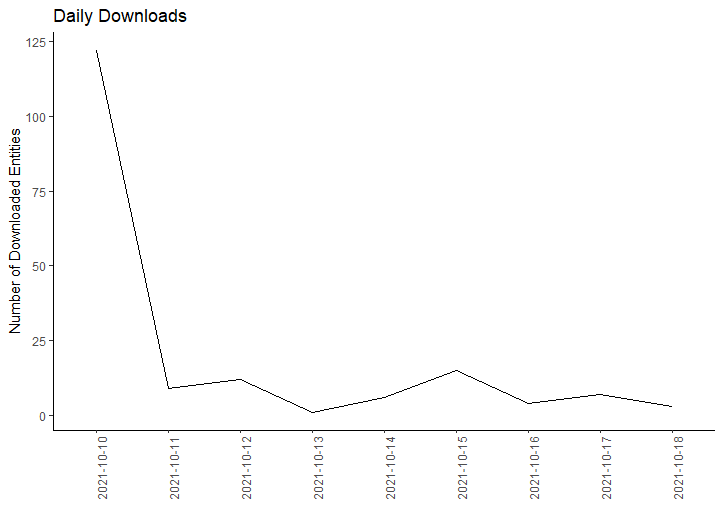

vignettes/retrieve_download_stats.Rmd
retrieve_download_stats.RmdThe EDIutils package provides R wrappers to the PASTA REST API functions.
This vignette demonstrates how to query PASTA for dataset download statistics. These stats may be used in reports or further processed to understand data user behavior.
# This vignette uses a development version of EDIutils on the "cran" branch
remotes::install_github("EDIorg/EDIutils", ref = "cran")
library(EDIutils)
library(xml2)
library(stringr)
library(dplyr)
#>
#> Attaching package: 'dplyr'
#> The following objects are masked from 'package:stats':
#>
#> filter, lag
#> The following objects are masked from 'package:base':
#>
#> intersect, setdiff, setequal, union
library(lubridate)
#>
#> Attaching package: 'lubridate'
#> The following objects are masked from 'package:base':
#>
#> date, intersect, setdiff, union
library(ggplot2)Several PASTA REST API functions return XML, xml2 is a convenient package to extract desired information and to save returned EML files locally.
Accessing the audit report requires to be logged in with an EDI account. Google, git, or ORCID authentication will not work. The vignette accomplishes this with a .Renviron file in the project’s root directory.
In a text editor create the file .Renviron with the content:
USERID=youruserid
USERPW=yourpw
Then restart your R session as this file will only be loaded at startup.
Setting the query parameters to get the desired audit report:
category should be ‘info’ to only see actual downloads from users not botsserviceMethod is readDataEntity, i.e., downloads of data entitiesresourceID is a substring of the full URL pattern https://pasta.lternet.edu/package/data/eml/{scope}/{datasetID}/{version}. In this example we use the scope to get all download records for a sitefromTime (ISO format) is important to set to limit the number of records to be processed. Reliable download information with most bot access filtered out are available since about 2019.toTime (ISO time format) may be set as welllimit may be used to limit the number of recordsFor more documentation see the PASTA API Documentation
The parameters need to be separated by an ampersand
login(userId = Sys.getenv("USERID"), userPass = Sys.getenv("USERPW"))
query <- paste("category=info",
"serviceMethod=readDataEntity",
"resourceId=knb-lter-ntl",
"fromTime=2021-10-10T00:00:00",
"toTime=2021-10-19T00:00:00",
sep = "&")
report_xml <- get_audit_report(query = query, tier = "production")
logout()The returned XML has the format:
<auditReport>
<auditRecord>
<oid>115951546</oid>
<entryTime>2021-10-18T09:27:52</entryTime>
<category>info</category>
<service>DataPackageManager-1.0</service>
<serviceMethod>readDataEntity</serviceMethod>
<responseStatus>200</responseStatus>
<resourceId>https://pasta.lternet.edu/package/data/eml/knb-lter-ntl/387/1/c472d5a7ac8a89a12100792e9b5705d3</resourceId>
<user>public</user>
<userAgent>null</userAgent>
<groups/>
<authSystem>https://pasta.edirepository.org/authentication</authSystem>
<entryText>Entity Name: EDI_Data_Metadata_JumpingWorms.csv; Object Name: EDI_Data_Metadata_JumpingWorms.csv; Data Format: text/csv</entryText>
</auditRecord>
</auditReport>Set up the data frame to hold date and packageID
df_results <- data.frame(dl_date = as.Date(character()),
dl_scope = character(),
dl_datasetID = character(),
dl_revision = character())Get the date and packageID
download_date_time <- xml_text(xml_find_all(report_xml, "//entryTime"))
download_data_entity <- xml_text(xml_find_all(report_xml, "//resourceId"))
for (i in 1:length(download_data_entity)) {
dl_date <- str_split(download_date_time, "T")[[i]][1]
dl_entity <- str_split(download_data_entity, "/")[i]
dl_scope <- dl_entity[[1]][7]
dl_datasetID <- dl_entity[[1]][8]
dl_revision <- dl_entity[[1]][9]
df_results_record <- data.frame(dl_date = dl_date,
dl_scope = dl_scope,
dl_datasetID = dl_datasetID,
dl_revision = dl_revision)
df_results <- rbind(df_results, df_results_record)
}Group and count downloads for each data package for the entire time period
df_downloads <- df_results %>%
group_by(dl_datasetID, dl_scope) %>%
summarise(n = n())
#> `summarise()` has grouped output by 'dl_datasetID'. You can override using the `.groups` argument.Or count downloads per month
df_downloads_per_month <- df_results %>%
mutate(dl_month = month(dl_date)) %>%
group_by(dl_month) %>%
summarise(n = n())And graph the downloads
df_downloads_daily <- df_results %>%
group_by(dl_date) %>%
arrange(dl_date) %>%
summarise(n = n())
ggplot(df_downloads_daily, aes(x=dl_date, y=n, group = 1)) +
geom_line() +
labs(y = "Number of Downloaded Entities",
title = "Daily Downloads") +
theme(axis.text.x = element_text(angle = 90),
axis.title.x = element_blank(),
axis.line = element_line(colour = "black"),
panel.background = element_rect(fill = "white"))